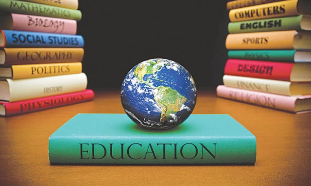

EDUCATION

History Education: Unlocking the Past for a Better Future
1. Introduction:
- History education plays a vital role in shaping our understanding of the past, providing valuable insights
into the development of civilizations, cultures, and societies. It helps us comprehend the complex interplay of
events, individuals, and ideas that have shaped the world we live in today. This article explores the importance
of history education, its goals, key components, and approaches, highlighting the benefits it offers to
individuals and societies.
2.Importance of History Education
- A. Understanding the past: History education provides context to current events and fosters a deeper
understanding of how societies have evolved over time.
B. Critical thinking skills: Studying history develops analytical and critical thinking skills, encouraging
students to evaluate evidence, draw conclusions, and engage in reasoned debates.
C. Cultural appreciation: History education promotes cultural appreciation, enabling individuals to understand
diverse perspectives, values, and traditions.
D. Civic engagement: By studying historical events and social movements, history education encourages civic
engagement and a sense of social responsibility
3. Goals of History Education:
- A. Knowledge acquisition: History education aims to equip students with a comprehensive knowledge base about
significant historical events, individuals, and eras.
B. Historical thinking skills: It seeks to develop skills such as source analysis, chronological reasoning,
interpretation, and contextualization, allowing students to engage with historical sources critically.
4. Components of History Education
-Components of History Education
A. Curriculum: A well-designed history curriculum encompasses a wide range of topics, periods, and geographical
regions, providing a comprehensive understanding of global history.
B. Primary and secondary sources: History education emphasizes the use of primary and secondary sources, such as
letters, diaries, artifacts, and scholarly research, to develop a deeper understanding of historical events.
C. Inquiry-based learning: History education employs inquiry-based learning approaches, encouraging students to
ask questions, investigate historical problems, and construct their knowledge.
D. Multidisciplinary approach: It integrates various disciplines, such as archaeology, anthropology, sociology,
economics, and political science, to provide a holistic understanding of historical events and processes.
5. Approaches to History Education
A. Chronological approach: This approach focuses on teaching history in chronological order, highlighting the sequence of events and their interconnections.
B. Thematic approach: Thematic history education centers on exploring key themes or concepts across different time periods, allowing students to make connections and identify patterns.
C. Comparative approach: This approach involves comparing and contrasting historical events, societies, or civilizations to understand similarities, differences, and the impact of various factors.
D. Global perspective: History education increasingly emphasizes a global perspective, recognizing the interconnectedness of historical events across different regions and cultures.
Conclusion:
History education serves as a bridge between the past and the present, enabling individuals to develop a deeper understanding of the world around them. By fostering critical thinking, empathy, and historical consciousness, it equips individuals to make informed decisions, engage in meaningful dialogue, and contribute to a better future. Through a well-rounded curriculum, use of primary sources, inquiry-based learning, and various teaching approaches, history education plays a vital role in shaping well-informed and culturally aware citizens.